釣行記TRIP REPORT
■ プロローグ ― 鹿島公共埠頭フリーク
今回の会場選択権はガキオヤRin。
Rinと言えば鹿島公共埠頭‼️ 鹿島公共埠頭と言えばRin‼️
そう言われるほどの鹿島公共埠頭フリーク↑age↑
鹿島工業地帯の夜景の美しさ✨ これは観る者を虜にする。
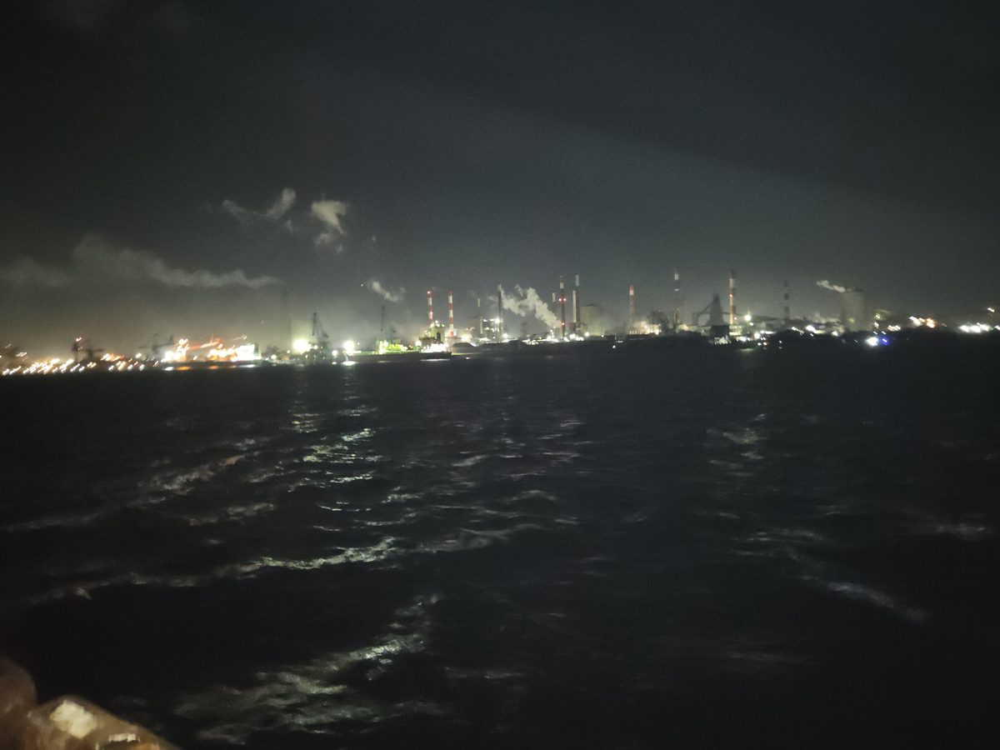
観る者を虜にする、鹿島工業地帯の夜景✨
…が、この素晴らしきフィールドに共感できないヤカラが若干1名。
そう、勇者ワカグリ😤💦
筋金入りの鹿島公共埠頭嫌いで、「ただの水溜り」と言い放つ始末。まあ、難易度ちょい高めの釣り場なのはRinも認めるところだけどね。
■ 出発 ― 釣座はすんなり、風はビュンビュン
行きのハンドルはRin。会長の家を8時前に出発し、途中のコンビニで買い出しをして、現場には9時過ぎに到着。
連休×大潮。釣り人にとっては条件が揃っていて、現場はそこそこの混み具合。それでも日頃の行いが良いのだろう、釣座はすんなり確保✌️
ただし風が強い…。釣りづらくてヤル気を削がれる状況だった🌬️
■ 3人3様のテンション
ガキオヤRin：テンション低め。いつもの山っ気も覇気もなく、頭の中は完成したゲームの出来栄えばかり🎮
NANANUMA会長：さすが😆 釣る気満々、一番釣り人らしく見えた。
勇者ワカグリ：移動中のエルグランド後部座席をプライベートBarに改装🍻 到着までにハイボール缶を2本ほど空け、いつもの酔拳MODEに突入💦
■ 先制は酔拳MODE
それぞれが準備を整えて実釣スタート。意外にも一番最初に釣り上げたのは、酔拳MODEのワカグリ‼️
シーズン2では毒魚もポイントになる——それを活かしたのか否かは定かではないが、ゴンズイを立て続けにキャッチ🐟
■ 会長、怒涛の快進撃
その後は会長の独壇場🔥 クロムツ、キントキダイ、ショゴ…と多彩な魚種を次々と並べていく。
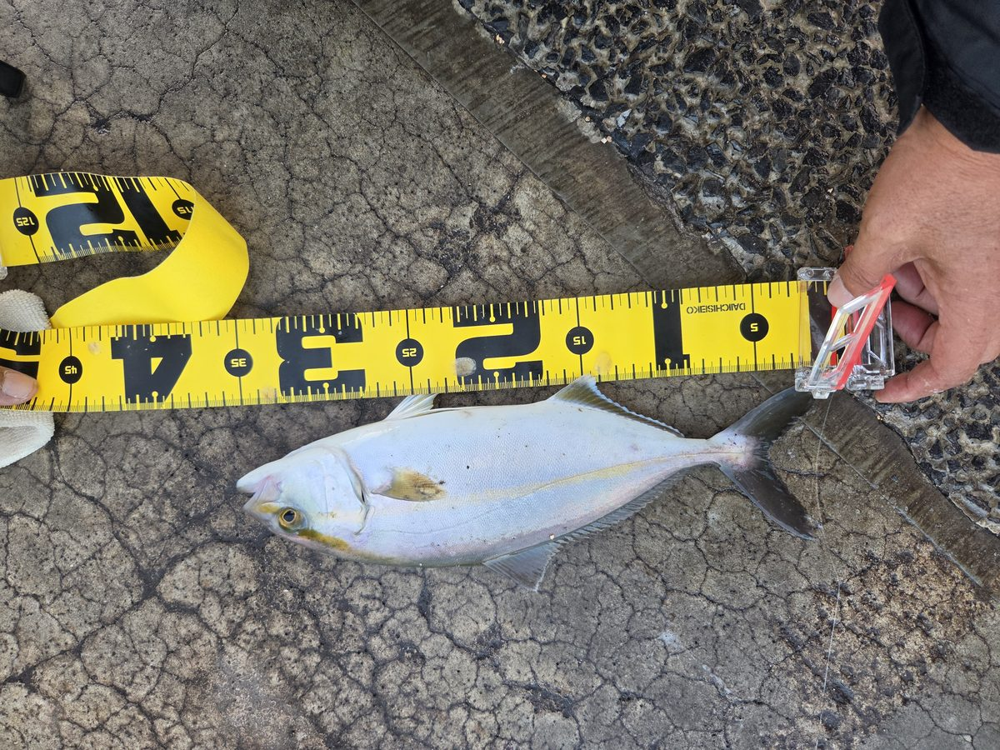
メジャーで計測中の一匹
Rinもやられっぱなしではない💪 サバ・アジは余裕の二桁、カサゴも釣った。
🐟 謎の縞々赤魚事件
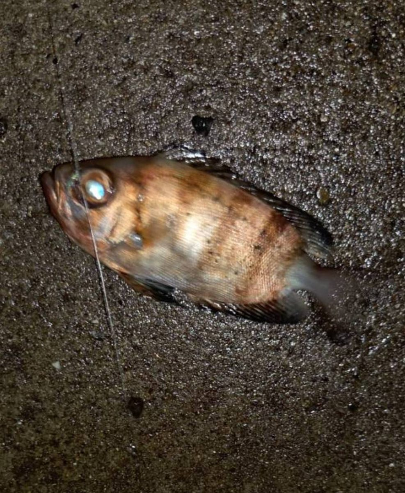
Rinにも赤い魚がヒット！「キントキダイか⁉️」…と思いきや、会長のキントキダイは全身真っ赤なのに、Rinのには縞が入っている。胸ビレの形も若干違う気がする…🤔
結局、正体は分からずじまい。アプリには仕方なく「メバル」で登録した（笑）
詳しい方、正体を教えてください🙏
■ 絶体絶命 ― タックル落水事件
この釣行中、風はずっと強いまま。
その結果、Rinも会長もタックルを海に落とすという絶体絶命の事態に💦
タモ網でなんとか掬い上げて九死に一生…！
■ 周りの釣り人たち
周りの皆さんもよく釣れていたほうだと思う。大潮で潮がよく動いて、魚の活性も高かったのだろう‼️
ルアーで青物を釣っている人、フグを無限に釣り上げる人も（笑）
■ エピローグ ― 折り返し
今大会は会長がMVP。それでも累積ポイントでは、なんだかんだでRinがトップのままシーズン2を折り返す形になった🏆
タイムラインTIMELINE
＊時刻が分からない出来事は「—」で表記しています。
メンバー紹介MEMBERS
誰よりも釣る気満々で、誰よりも釣り人らしかった男。ショゴ、クロムツ、キントキダイと多彩な魚種を揃え、今大会のMVPをもぎ取った。強風でタックルを海に落とす場面もあったが、タモで救出。現場メシはアサリとほうれん草とベーコンの炒め物にラーメン。
今回の会場選択権者にして、鹿島公共埠頭フリーク。行きのハンドルも担当。本人はテンション低めで、頭の中は完成したゲームの出来栄えばかり…のはずが、気づけばサバ・アジを二桁。謎の縞々赤魚の正体は今も分からない。累積トップの座はしっかり守った。
鹿島公共埠頭を「ただの水溜り」と言い切る筋金入りのアンチ。エルグランドの後部座席をプライベートBarにして、到着前に酔拳MODEへ。それでも一番乗りで魚を釣り上げ、毒魚ポイントのゴンズイを連発。現場メシはかけ蕎麦。
結果発表RESULTS
■ 今大会（シーズン2 第2回）
- 1位NANANUMA会長 👑40pt
- 2位ガキオヤRin38pt
- 3位勇者ワカグリ15pt
■ シーズン2 累積ランキング
| メンバー | 第1回 大津 | 第2回 鹿島 | 累積 |
|---|---|---|---|
| 🥇 ガキオヤRin | 22 | 38 | 60pt |
| 🥈 NANANUMA会長 | 10 | 40 | 50pt |
| 🥉 勇者ワカグリ | 5 | 15 | 20pt |
＊ポイントはクラブアプリの記録をもとに集計。匹数はメンバー申告の数です。
データビジュアライズDATA VISUALIZE
🏆 今大会のポイント
📈 シーズン2 累積ポイント（大会別）
🐟 魚種別の釣果（匹）
匹数ではRinが25匹でトップ。会長は5魚種を釣り上げた。
フォトギャラリーPHOTO GALLERY
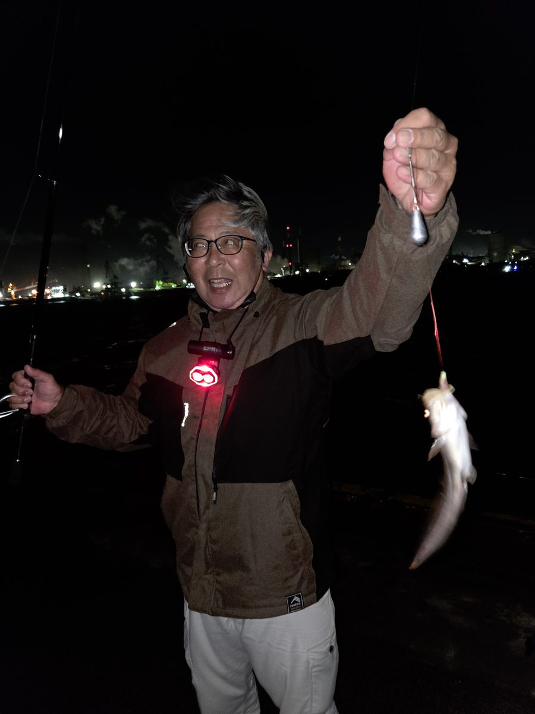
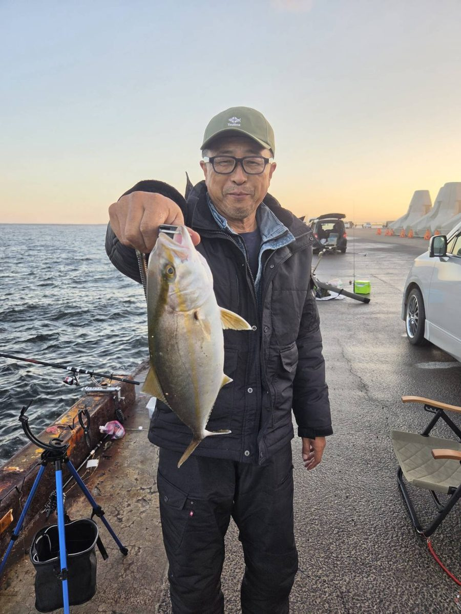
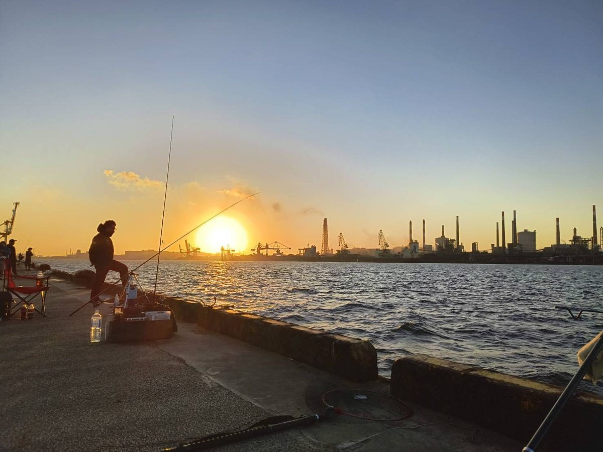
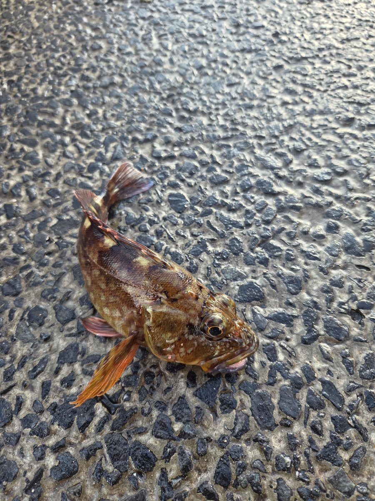
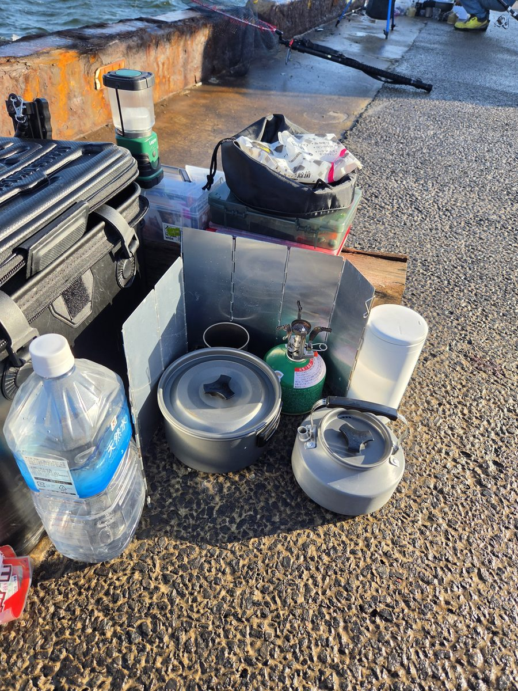
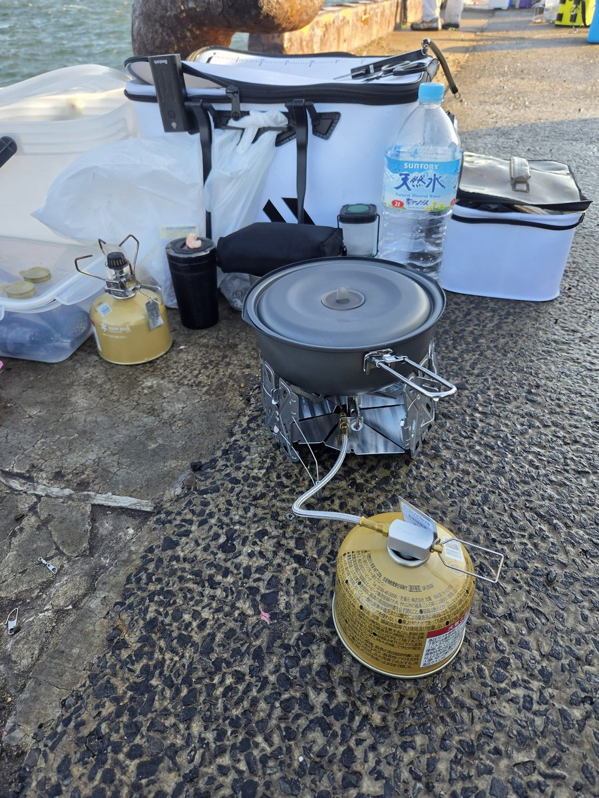
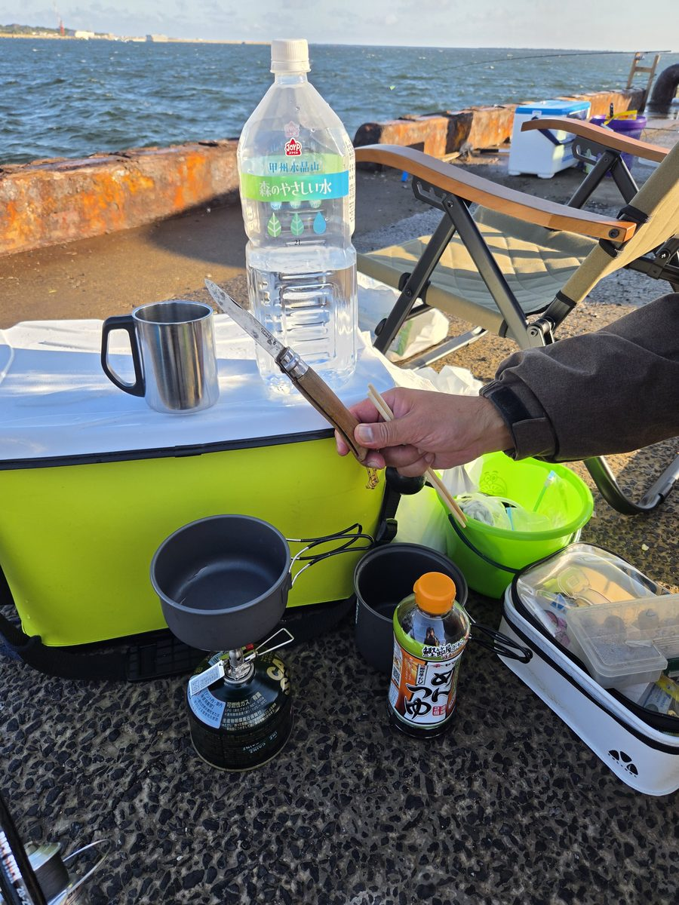
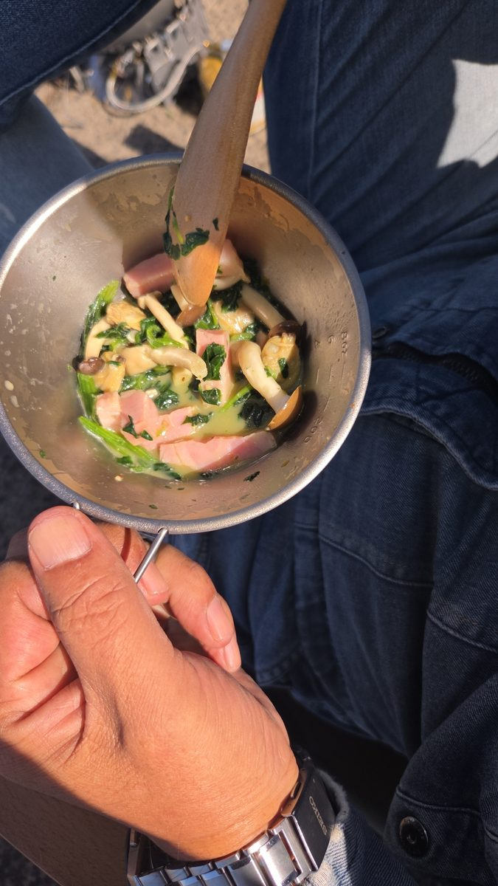
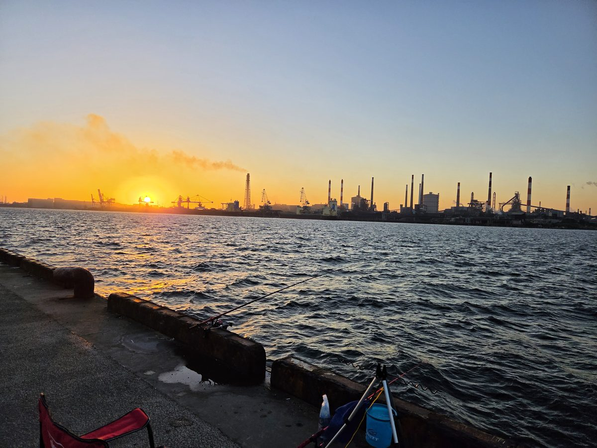
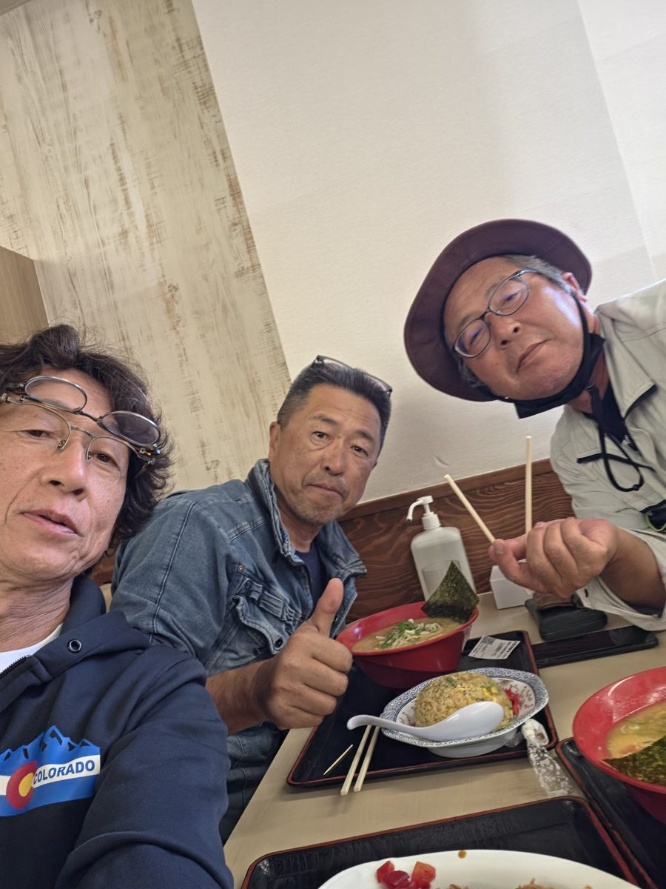
現場メシ＆反省会🍜GOURMET
今回は長丁場。周りの皆さんもバーナーを持ち込んで、簡単な飯を作って食べていた🔥
埠頭のバーナー飯セット
- 🍜 勇者ワカグリ — かけ蕎麦
- 🥬 NANANUMA会長 — アサリとほうれん草とベーコンの炒め物、ラーメン
- 🍛 ガキオヤRin — 湯煎ライスで麻婆丼、カレー
これも楽しみの一つだし、美味しかったね😊
■ 帰りの反省会 ― 角崎・ニンタマラーメン
地元に近い角崎のニンタマラーメンにて
注文はカツカレー、ラーメン半チャーハン、ラーメン。それぞれ好きなものを頼んで、長丁場の大会を締めくくった🍜
総括REVIEW
今大会の結果
1位 NANANUMA会長 40pt ／ 2位 ガキオヤRin 38pt ／ 3位 勇者ワカグリ 15pt
MVPは会長。ポイントも魚も文句なし👑
シーズン2 累積（折り返し時点）
1位 ガキオヤRin 60pt ／ 2位 NANANUMA会長 50pt ／ 3位 勇者ワカグリ 20pt
差は10pt。Rinがトップのまま折り返し、後半戦へ！
次回への申し送り
- 強風時はタックルの置き場所・固定に要注意（2名が落水を経験）
- 謎の縞々赤魚の正体を調べておく
- ワカグリの鹿島公共埠頭アンチを解除できるか（経過観察中）